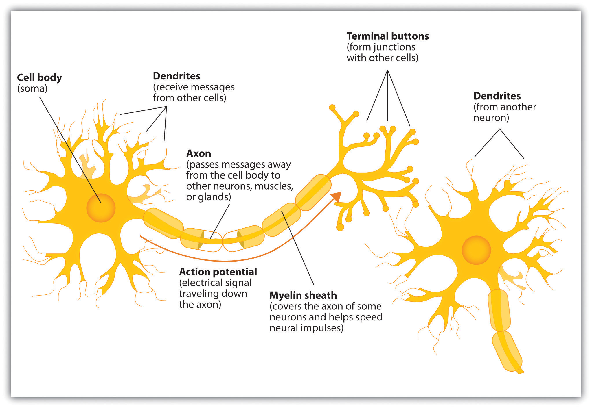

The nervous system is composed of more than 100 billion cells known as neurons. A neuronOne of the more than 100 billion cells in the nervous system. is a cell in the nervous system whose function it is to receive and transmit information. As you can see in Figure 3.2 "Components of the Neuron", neurons are made up of three major parts: a cell body, or somaThe part of the neuron that contains the nucleus of the cell and that keeps the cell alive., which contains the nucleus of the cell and keeps the cell alive; a branching treelike fiber known as the dendriteThe part of the neuron that collects information from other cells and sends the information to the soma., which collects information from other cells and sends the information to the soma; and a long, segmented fiber known as the axonThe part of the neuron that transmits information away from the cell body toward other neurons., which transmits information away from the cell body toward other neurons or to the muscles and glands.
Figure 3.2 Components of the Neuron
Figure 3.3

The nervous system, including the brain, is made up of billions of interlinked neurons. This vast interconnected web is responsible for all human thinking, feeling, and behavior.
Source: Photo courtesy of GE Healthcare, http://www.flickr.com/photos/gehealthcare/4253587827/.
Some neurons have hundreds or even thousands of dendrites, and these dendrites may themselves be branched to allow the cell to receive information from thousands of other cells. The axons are also specialized, and some, such as those that send messages from the spinal cord to the muscles in the hands or feet, may be very long—even up to several feet in length. To improve the speed of their communication, and to keep their electrical charges from shorting out with other neurons, axons are often surrounded by a myelin sheath. The myelin sheathA layer of fatty tissue surrounding the axon of a neuron that acts as an insulator and allows faster transmission of the electrical signal. is a layer of fatty tissue surrounding the axon of a neuron that both acts as an insulator and allows faster transmission of the electrical signal. Axons branch out toward their ends, and at the tip of each branch is a terminal button.
The nervous system operates using an electrochemical process (see Note 3.12 "Video Clip: The Electrochemical Action of the Neuron"). An electrical charge moves through the neuron itself and chemicals are used to transmit information between neurons. Within the neuron, when a signal is received by the dendrites, is it transmitted to the soma in the form of an electrical signal, and, if the signal is strong enough, it may then be passed on to the axon and then to the terminal buttons. If the signal reaches the terminal buttons, they are signaled to emit chemicals known as neurotransmitters, which communicate with other neurons across the spaces between the cells, known as synapses.
This video clip shows a model of the electrochemical action of the neuron and neurotransmitters.
The electrical signal moves through the neuron as a result of changes in the electrical charge of the axon. Normally, the axon remains in the resting potentialA state in which the interior of the neuron contains a greater number of negatively charged ions than does the area outside the cell., a state in which the interior of the neuron contains a greater number of negatively charged ions than does the area outside the cell. When the segment of the axon that is closest to the cell body is stimulated by an electrical signal from the dendrites, and if this electrical signal is strong enough that it passes a certain level or threshold, the cell membrane in this first segment opens its gates, allowing positively charged sodium ions that were previously kept out to enter. This change in electrical charge that occurs in a neuron when a nerve impulse is transmitted is known as the action potentialA change in electrical charge that occurs in a neuron when a nerve impulse is transmitted.. Once the action potential occurs, the number of positive ions exceeds the number of negative ions in this segment, and the segment temporarily becomes positively charged.
As you can see in Figure 3.4 "The Myelin Sheath and the Nodes of Ranvier", the axon is segmented by a series of breaks between the sausage-like segments of the myelin sheath. Each of these gaps is a node of RanvierThe break in the myelin sheath of a nerve fiber.. The electrical charge moves down the axon from segment to segment, in a set of small jumps, moving from node to node. When the action potential occurs in the first segment of the axon, it quickly creates a similar change in the next segment, which then stimulates the next segment, and so forth as the positive electrical impulse continues all the way down to the end of the axon. As each new segment becomes positive, the membrane in the prior segment closes up again, and the segment returns to its negative resting potential. In this way the action potential is transmitted along the axon, toward the terminal buttons. The entire response along the length of the axon is very fast—it can happen up to 1,000 times each second.
Figure 3.4 The Myelin Sheath and the Nodes of Ranvier

The myelin sheath wraps around the axon but also leaves small gaps called the nodes of Ranvier. The action potential jumps from node to node as it travels down the axon.
An important aspect of the action potential is that it operates in an all or nothing manner. What this means is that the neuron either fires completely, such that the action potential moves all the way down the axon, or it does not fire at all. Thus neurons can provide more energy to the neurons down the line by firing faster but not by firing more strongly. Furthermore, the neuron is prevented from repeated firing by the presence of a refractory period—a brief time after the firing of the axon in which the axon cannot fire again because the neuron has not yet returned to its resting potential.
Not only do the neural signals travel via electrical charges within the neuron, but they also travel via chemical transmission between the neurons. Neurons are separated by junction areas known as synapsesThe small gap between neurons across which nerve impulses are transmitted., areas where the terminal buttons at the end of the axon of one neuron nearly, but don’t quite, touch the dendrites of another. The synapses provide a remarkable function because they allow each axon to communicate with many dendrites in neighboring cells. Because a neuron may have synaptic connections with thousands of other neurons, the communication links among the neurons in the nervous system allow for a highly sophisticated communication system.
When the electrical impulse from the action potential reaches the end of the axon, it signals the terminal buttons to release neurotransmitters into the synapse. A neurotransmitterA chemical that relays signals across the synapses between neurons. is a chemical that relays signals across the synapses between neurons. Neurotransmitters travel across the synaptic space between the terminal button of one neuron and the dendrites of other neurons, where they bind to the dendrites in the neighboring neurons. Furthermore, different terminal buttons release different neurotransmitters, and different dendrites are particularly sensitive to different neurotransmitters. The dendrites will admit the neurotransmitters only if they are the right shape to fit in the receptor sites on the receiving neuron. For this reason, the receptor sites and neurotransmitters are often compared to a lock and key (Figure 3.5 "The Synapse").
Figure 3.5 The Synapse

When the nerve impulse reaches the terminal button, it triggers the release of neurotransmitters into the synapse. The neurotransmitters fit into receptors on the receiving dendrites in the manner of a lock and key.
When neurotransmitters are accepted by the receptors on the receiving neurons their effect may be either excitatory (i.e., they make the cell more likely to fire) or inhibitory (i.e., they make the cell less likely to fire). Furthermore, if the receiving neuron is able to accept more than one neurotransmitter, then it will be influenced by the excitatory and inhibitory processes of each. If the excitatory effects of the neurotransmitters are greater than the inhibitory influences of the neurotransmitters, the neuron moves closer to its firing threshold, and if it reaches the threshold, the action potential and the process of transferring information through the neuron begins.
Neurotransmitters that are not accepted by the receptor sites must be removed from the synapse in order for the next potential stimulation of the neuron to happen. This process occurs in part through the breaking down of the neurotransmitters by enzymes, and in part through reuptakeThe process in which the neurotransmitters in the synapse are reabsorbed into the transmitting terminal buttons., a process in which neurotransmitters that are in the synapse are reabsorbed into the transmitting terminal buttons, ready to again be released after the neuron fires.
More than 100 chemical substances produced in the body have been identified as neurotransmitters, and these substances have a wide and profound effect on emotion, cognition, and behavior. Neurotransmitters regulate our appetite, our memory, our emotions, as well as our muscle action and movement. And as you can see in Table 3.1 "The Major Neurotransmitters and Their Functions", some neurotransmitters are also associated with psychological and physical diseases.
Drugs that we might ingest—either for medical reasons or recreationally—can act like neurotransmitters to influence our thoughts, feelings, and behavior. An agonistA drug that has chemical properties similar to a particular neurotransmitter and thus mimics the effects of the neurotransmitter. is a drug that has chemical properties similar to a particular neurotransmitter and thus mimics the effects of the neurotransmitter. When an agonist is ingested, it binds to the receptor sites in the dendrites to excite the neuron, acting as if more of the neurotransmitter had been present. As an example, cocaine is an agonist for the neurotransmitter dopamine. Because dopamine produces feelings of pleasure when it is released by neurons, cocaine creates similar feelings when it is ingested. An antagonistA drug that reduces or stops the normal effects of a neurotransmitter. is a drug that reduces or stops the normal effects of a neurotransmitter. When an antagonist is ingested, it binds to the receptor sites in the dendrite, thereby blocking the neurotransmitter. As an example, the poison curare is an antagonist for the neurotransmitter acetylcholine. When the poison enters the brain, it binds to the dendrites, stops communication among the neurons, and usually causes death. Still other drugs work by blocking the reuptake of the neurotransmitter itself—when reuptake is reduced by the drug, more neurotransmitter remains in the synapse, increasing its action.
Table 3.1 The Major Neurotransmitters and Their Functions
| Neurotransmitter | Description and function | Notes |
|---|---|---|
| Acetylcholine (ACh) | A common neurotransmitter used in the spinal cord and motor neurons to stimulate muscle contractions. It’s also used in the brain to regulate memory, sleeping, and dreaming. | Alzheimer’s disease is associated with an undersupply of acetylcholine. Nicotine is an agonist that acts like acetylcholine. |
| Dopamine | Involved in movement, motivation, and emotion, Dopamine produces feelings of pleasure when released by the brain’s reward system, and it’s also involved in learning. | Schizophrenia is linked to increases in dopamine, whereas Parkinson’s disease is linked to reductions in dopamine (and dopamine agonists may be used to treat it). |
| Endorphins | Released in response to behaviors such as vigorous exercise, orgasm, and eating spicy foods. | Endorphins are natural pain relievers. They are related to the compounds found in drugs such as opium, morphine, and heroin. The release of endorphins creates the runner’s high that is experienced after intense physical exertion. |
| GABA (gamma-aminobutyric acid) | The major inhibitory neurotransmitter in the brain. | A lack of GABA can lead to involuntary motor actions, including tremors and seizures. Alcohol stimulates the release of GABA, which inhibits the nervous system and makes us feel drunk. Low levels of GABA can produce anxiety, and GABA agonists (tranquilizers) are used to reduce anxiety. |
| Glutamate | The most common neurotransmitter, it’s released in more than 90% of the brain’s synapses. Glutamate is found in the food additive MSG (monosodium glutamate). | Excess glutamate can cause overstimulation, migraines and seizures. |
| Serotonin | Involved in many functions, including mood, appetite, sleep, and aggression. | Low levels of serotonin are associated with depression, and some drugs designed to treat depression (known as selective serotonin reuptake inhibitors, or SSRIs) serve to prevent their reuptake. |